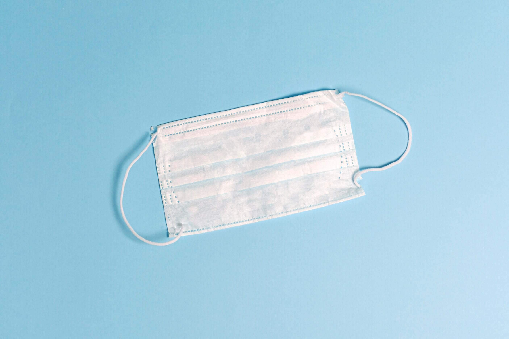
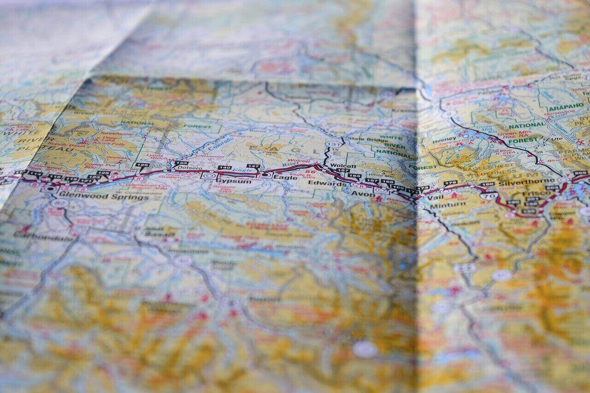

Over the past year, Stan Liner has been participating
in charity events. With hundreds of donations to natural disasters,
hospitals, and organizations for children, Stan Liner is setting a goal
to have a Christmas Toy Drive to give back to children who are less fortunate.
This will be held on December 19, 2022.
Christmas Charity Event

During 2019, we strictly required our passengers to wear a mask
for their own and other people's safety due to Covid-19. We are happy
to announce that we are no longer requiring passengers on wearing a mask.
Wearing a mask is now voluntarily.
Face Mask Policy
Stan Liner is hiring! For more information
please send us an email and we will get back to you.
Career

Many passengers from Naic, Cavite Philippines need public transportation in order to get to work in Manila. Manila is about an hour away from Naic and there are no trains available. Buses are the only option for people who doesn't own a private vechicle. Stan Liner's bus route is from Ternate, Cavite to PITX, Pasay. This is the only fast and safest bus route for passengers from Cavite if they want to go to Manila.